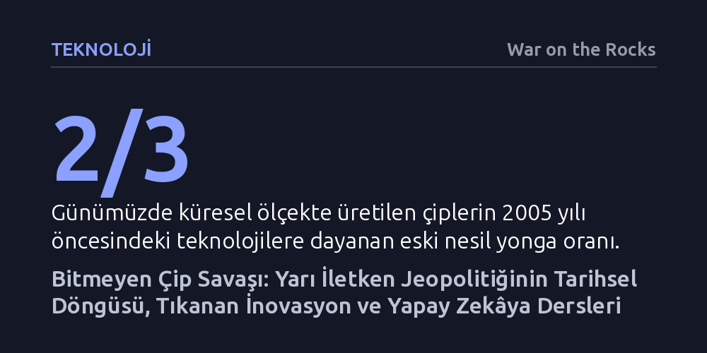

TEKNOLOJI · War on the Rocks · 2026-10-23
Çip savaşları ve tedarik krizleri yeni bir durum değil, yarı iletken sektörünün sermaye yoğun ve döngüsel yapısının doğal sonucudur. Donanım hızının tıkandığı yapay zekâ çağında çözüm, ambargolardan ziyade yeni litografi teknolojilerine ve ortak inovasyon konsorsiyumlarına odaklanmaktır.
Çip krizlerinin güncel siyasi gerilimlerden ziyade sektörün elli yıllık fiziksel ve iktisadi dinamiklerinden kaynaklandığını, yapay zekâ rekabetinin de geçmişteki donanım tekellerini tekrarladığını gösterir.

Günümüz medyasında ve kamuoyunda çip savaşları, ihracat kısıtlamaları ya da gümrük vergileri sanki ABD ile Çin arasındaki rekabetle başlamış yepyeni bir jeopolitik kriz gibi algılanıyor. Oysa yarı iletkenlerin tarihi, icat edildikleri ilk andan itibaren devletlerin bu teknolojiye erişmek ve tekel kurmak için verdiği kıyasıya mücadelelerle şekillendi. 1960'larda kıtalararası balistik füzeler ve uzay yarışıyla başlayan stratejik rekabet; 1970'lerde savaş uçaklarına, 1980'lerde kişisel bilgisayarlara ve 1990'larda küresel konumlama sistemlerine (GPS) güç veren temel itici güç oldu.
Çiplerin jeopolitik baskı ve ticaret kaldıracı olarak kullanılması da dünün meselesi değildir. Amerika Birleşik Devletleri, 1980'lerin ortasında yükselen Japon çip hâkimiyetini kırmak için sert ticaret kısıtlamaları ve jeopolitik müdahaleler uygulamış, Japon yarı iletken sanayisinin gerilemesini doğrudan tetiklemiştir. Benzer şekilde Soğuk Savaş döneminde Sovyetler Birliği'ne uygulanan çip ambargoları, Moskova'nın modern hassas güdümlü mühimmatlar geliştirmesini ve rekabetçi bir ekonomi yönetmesini engelleyerek Soğuk Savaş'ı kaybetmesinde belirleyici bir rol oynamıştır.
Üstelik çip kıtlıkları da küresel salgınla hayatımıza girmiş arızi krizler değildir. Çip talebi doğası gereği döngüseldir; talep patladığında üreticiler devasa sermaye yatırımı yapmaktan çekinir, çünkü döngü tersine döndüğünde oluşacak kapasite fazlası iflas getirebilir. Tedarik zincirleri maksimum maliyet verimliliği için optimize edildiğinden; 2011 Japonya tsunamisi, 2000 yılındaki Intel talep tahmin hatası veya 1990'lardaki kişisel bilgisayar patlaması gibi her beklenmedik sarsıntı periyodik kıtlıkları kaçınılmaz kılmaktadır.
Günümüzde teşvik politikalarının ve basının odağında daima en küçük nanometreye sahip en ileri çipler yer alıyor. Ancak sektörün gözden kaçan büyük gerçeği şudur: Halihazırda dünyada üretilen yongaların yaklaşık üçte ikisi, 2005 yılından önce ticarileştirilmiş eski nesil teknolojilere dayanmaktadır. TSMC gibi küresel dökümhaneler, çok daha karlı olan ileri düzey çiplere kaynak aktarmak için bu eski nesil üretim hatlarından çıkmak istemekte; ucuz Çin üretimi de bu alandaki kar marjlarını iyice eritmektedir.
Ne var ki bu eski çipleri en son teknolojiyle değiştirmek sanıldığı kadar kolay değildir. İleri düzey çip üretiminin getirdiği devasa maliyetler doğrudan otomotivden beyaz eşyaya kadar nihai tüketici ürünlerine yansıyacaktır. Dahası; havacılık, tıp ve otomotiv gibi sıkı regülasyonlara tabi sektörlerde her donanım değişikliği hem donanım ve yazılımın baştan tasarlanmasını hem de aylar süren maliyetli yeniden sertifikasyon süreçlerini zorunlu kılar.
Daha da kritik olan unsur fiziksel mukavemettir. Eski nesil çipler; aşırı sıcaklık, radyasyon ve titreşim gibi zorlu çevre şartlarına karşı en gelişmiş nano çiplerden çok daha yüksek dayanıklılık gösterir. Bu nedenle savunma ve uzay sanayisinde eski çiplerden vazgeçmek çoğu zaman teknik açıdan imkânsızdır. TSMC ve Samsung gibi devlerin önümüzdeki birkaç yıl içinde bu pazardan çekilmesiyle oluşacak boşluğu Singapur gibi mevcut üreticiler dolduracak; Hindistan gibi yeni aktörlerin ise ölçek yakalaması zaman alacaktır.
Tırnak ucu kadar bir alana milyarlarca mikroskobik anahtar sığdıran bir sektörde inovasyonun tıkandığını söylemek ilk bakışta şaşırtıcı gelebilir. Ancak rakamlar açık bir yavaşlamaya işaret ediyor: Mikroişlemcilerin çalışma hızları artık yılda yalnızca yüzde 10 ila 15 civarında artış gösterebiliyor. Mevcut transistör mimarisinin karşılaştığı enerji ve performans sınırlarını aşabilecek hazır bir alternatif teknoloji ise henüz ufukta görünmüyor.
Yapay zekâ patlaması bu krizi daha da derinleştirmektedir. Yapay zekâ algoritmalarının ihtiyaç duyduğu hesaplama kapasitesi, her iki yılda bir çiplerin sunduğu işlem gücünün 200 kat kadar önüne geçiyor. Üstelik modern grafik işlem birimleri (GPU), eşdeğer bir işlem hacmi için insan beyninden yüz milyonlarca kat daha fazla elektrik tüketiyor. Donanım hızı ile yazılımın iştahı arasındaki bu uçurum, sürdürülemez bir enerji açmazı doğuruyor.
Riskten kaçınan çip üreticileri artan maliyetler yüzünden yalnızca kademeli ve güvenli ilerlemelere odaklanırken, üniversiteler ve girişimler yüksek riskli radikal fikirler için sabırlı sermaye bulmakta zorlanıyor. Bu kısırdöngüyü kırmanın yolu; 1997'de temeli atılan ve aşırı morötesi litografi teknolojisini doğuran yapıya benzer biçimde, devlet ve özel sektör ortaklığıyla somut hedeflere odaklanan bağımsız Ar-Ge konsorsiyumları kurmaktan geçmektedir.
Yarı iletken sanayisinin geçmişi, bugün yapay zekâ alanında yaşanan rekabeti anlamak için kusursuz bir rehber sunmaktadır. 1980'lerde ve 90'lardaki kişisel bilgisayar devriminde asıl kazananlar bilgisayar üreticileri değil, dönemin vazgeçilmez mikroişlemcilerini sağlayan Intel olmuştu. Yazarın vurguladığı gibi altına hücum çağında "kazma ve küreği" satanların kazanması kuralı yapay zekâda da aynen işliyor; kârın aslan payını model geliştirenler değil, GPU sağlayan Nvidia ve altyapı tedarikçileri topluyor.
İkinci büyük benzerlik yazılım hendekleridir. Geçmişte geliştiricilerin kodlarını x86 mimarisinden başka bir platforma taşımak istememesi Intel'e onlarca yıllık sarsılmaz bir pazar hâkimiyeti kazandırmıştı. Bugün aynı durum, yazılımcıların Nvidia'nın CUDA ekosistemini terk etmeye yanaşmamasıyla tekrarlanıyor. Yapay zekâ bizzat kod dönüştürme ve taşıma işini bütünüyle üstlenene kadar, donanımın gücünü koruyan asıl unsur bu yazılım bağımlılığı olmaya devam edecektir.
Son olarak, ileri düzey çip üretiminin gerektirdiği akıl almaz sermaye maliyetleri küresel ölçekte nasıl yalnızca iki ya da üç üretici bıraktıysa, en gelişmiş yapay zekâ modellerini geliştirebilecek aktör sayısı da benzer şekilde daralmaktadır. Tıpkı Çin'in tüm kısıtlamalara rağmen en ileri seviye dışındaki tüm çip segmentlerinde kritik bir güç haline gelmesi gibi; yarının dünyasında da birçok ülke kendi egemen yapay zekâ modellerini inşa ederek en üst kademenin hemen ardında dengeyi sağlayacaktır.
Yarı iletken üretimi, 40 ila 50 ülkeye yayılan tedarik halkalarıyla insanlık tarihinin en karmaşık mühendislik sürecidir. Ancak bu zincirin her düğümü aynı ağırlıkta değildir. Örneğin kritik minerallerin madenciliği dünyaya yayılmış olsa da işleme kapasitesinin Çin'de toplanması erken devlet desteği ve çevre regülasyonlarının esnekliğine dayanır. Batılı ülkelerin burada Çin'le doğrudan rekabet etmek yerine müttefik ülkelerle tedarik ortaklığı kurması ve batarya geri dönüşümüne yönelmesi çok daha akılcıdır.
Buna karşılık Hollandalı ASML'nin aşırı morötesi litografi tekelini kırmak bambaşka bir boyuttur. Bu makineleri üretmek otuz yıllık birikim, yüz milyarlarca dolarlık yatırım ve küresel ölçekte dağılmış devasa bir uzmanlık ağı gerektirmiştir. Çin'in son on yılda tecrübe ettiği üzere, yalnızca ulusal irade ve sınırsız para bu teknolojiyi sıfırdan kopyalamaya yetmemektedir. Doğru strateji, ASML'yi taklit etmeye çalışmak değil; X-ışını veya nano-baskı gibi yeni nesil litografi alternatiflerine yatırım yaparak bir sonraki teknolojik sıçramayı gerçekleştirmektir.
Savunma tedarik zincirinde ise Pentagon'un toplam çip pazarında önemsiz bir paya sahip olması temel bir güvenlik açığı yaratmaktadır. Kriz ve çatışma anlarında katı tedarik kurallarının hız uğruna terk edildiği gerçeği hatırlandığında, yalnızca üretimi içeriye çekmek yeterli değildir. Asıl yapılması gereken; havalimanlarındaki güvenlik taramalarına benzer biçimde, askeri donanımlara girecek yongaların tahribatsız görüntüleme, yapay zekâ parmak izi ve sisteme gömülü güvenlik mimarileriyle çok katmanlı fiziksel ve elektriksel doğrulamadan geçirilmesidir.